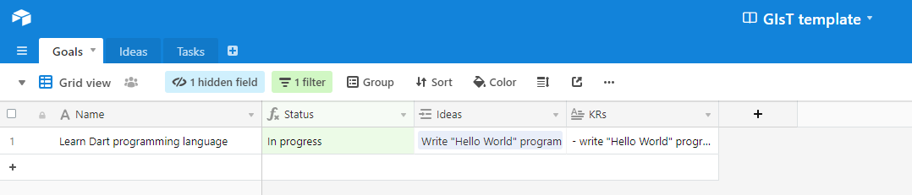
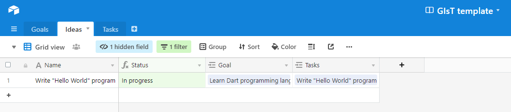
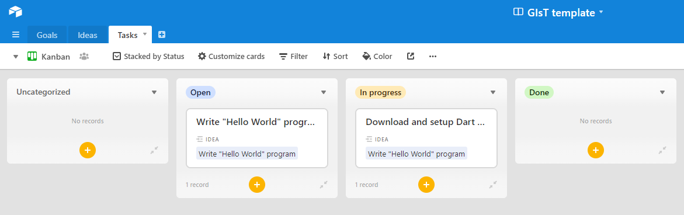
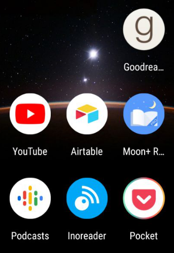

Photo by
Photo by
In IT, it’s very difficult to keep up-to-date. A full-time job doesn’t give you a chance to upskill or try new things because you’re too busy dealing with legacy code, developing features, etc.
Yet, self-development is an important thing and I’ve tried my best over years to make it a habit.
For the few past years, I’ve conducted a few experiments towards self-improvement, and I’d like to share a few of those here.
I spent one year reading fictional books (actually not that many books in total, but way more than I usually read).
The result was controversial. I read a few interesting books, but found literally nothing useful for myself. Instead of answers I got just more questions.
Then I tried to read some books about processes. I thought that it could help me to be more productive at work and in making some decisions.
Unfortunately, it didn’t work well. Probably, I now understand about processes more than before, but to incorporate this into actual work one should have enough of influence (which is not necessarily the case), and you need other people to share your opinion.
I should say that this actually had two outcomes: 1) I became a bit more calm about decisions and how people communicate with each other, 2) I felt ineffective in my inability to change the way other people work.
Then I spent some time trying to fill technical gaps. And I think the information I consumed gave me the most boost compared to previous attempts, though anyway I felt a bit unproductive, as the way I tried to learn was a bit random.
After that I tried to come up with a more structured way of learning, which I will try to share here.
Plan of attack
First of all we need a high-level plan, and then we’ll fill in some details. And with the plan, we need some tool to help us keep track on it.
Framework
I considered three frameworks:
-
Scrum — for me it doesn’t fit at all. I don’t want to work at some iterations. At work it is fine, but it is difficult to plan some activities outside usual work and commit to do something in 2–4 weeks. Life outside the job can provide a lot of surprises and I’m not that interested in having some value each iteration, just to be sure that I go towards some goal.
-
Kanban — it is a bit better than scrum, though still a bit low-level and misses high-level strategy.
-
GIST — that was the decision. We have just some high-level definition of our goals and try to split into smaller pieces we can work on.
Additionally, what resonated with me is the article about personal planning using GIST. I adapted it and improved in some directions to better suit my needs.
Maybe for you another framework will work better, it’s up to you to decide.
Tools
GIST a bit new framework, so not so many tools can be used to work with it out of the box. And it was actually a challenge to find what tool to use. I had few options:
-
JIRA — not fit at all (not that customizable).
-
Targetprocess — for it’s good configuration it is fine, though because of not enough support from mobile clients it is a No-Go. For work Targetprocess is fine and highly configurable, but for personal purposes mobile support is very important.
-
Fibery — should have GIST support out of the box, though still in beta and have no mobile support.
-
Notion — highly customizable system (with good mobile support). Though there are issues with performance and anyway not the best in terms of flexibility (though still fine comparing to other options)
-
Airtable — similar to Notion with better performance for web and mobile app.
So, I decided to use Airtable as a single source of truth.
Ways to gain knowledge
There are different ways to learn something new. Some of the things should become a daily routine and some of them needs to be planned:
-
Read books
-
Read articles
-
Watch videos (e.g. YouTube)
-
Listen podcasts
-
Make investigations / Write articles / Give talks
-
Create pet projects
-
Attend conferences/local communities
Read books
Books have essential knowledge on particular topic. It is good for dive in to some area or to systematize knowledge. Some books are just easy reads, some require thorough work.
-
find books There are different ways to find a books to read. You can look for some classic books on some topics (using GoodReads for example) or ask other people to recommend some. Also on GoodReads you can subscribe to other people’s feeds to see what other people read.
-
read on daily basis Select one book you’re interested in and spend at least 1–2 hours per day on reading it.
-
keep track of read books on GoodReads This can help you to see the progress of the routine and later on review books you’ve read and ideas these books had (and refresh some thoughts especially if you leave reviews to books).
Read articles
Articles are good for some quick dive-in, learning from others’ experience or understanding what other people are doing.
-
find articles The most effective way to find articles is to subscribe to RSS feeds for some blogs, aggregate websites, news feeds or Telegram channels. To manage feeds it is good to use some RSS management tool like Inoreader or Feedly. During the day look through the feed to not be overwhelmed by dozens of new articles.
-
save them to Pocket You’re not necessarily can have time to read some article at the moment you see it. Just save interesting article to Pocket and read later when you have time.
-
read on daily basis Each day spend at least 10–30 minutes reading articles you’ve saved.
Watch videos
Videos unlike books or articles provide additional visualization which is good for tutorials or presentations.
-
find videos Subscribe to channels which produce relevant content over time. These channels might have recordings of previous conferences sessions, tutorials and so on. Good source for such content is YouTube.
-
save to watch later As with articles not necessarily you will have time to watch some videos right away (especially long ones), so add them to Watch Later list.
-
make a plan to watch Videos might be quite long so you might not be able to watch them on a daily basis as with articles, therefore you need to plan to watch it (we’ll come to the planning later)
Listen podcasts
Podcasts are like videos. You can subscribe to some podcasts streams and save to listen them later.
Make investigations / Write articles
Good way to learn something is to try it in action, investigate and then write an article to share your knowledge. Writing articles provides additional level of understanding the problem.
-
find topics to investigate
-
make a plan for investigation
-
write article on results of investigation
Create pet projects
Pet projects is like advanced version of previous point. Instead of writing article on some topic you create working product or prototype and share it with the community. Sharing adds additional quality threshold on result which is very valuable.
-
make a plan for pet projects for interesting topics and proof-of-concepts
-
publish pet project (for example to Github)
Attend conferences/local communities
Conferences and local communities besides talks themselves give you a chance to chat with other people and understand mainstream topics and issues.
-
become part of you local community
-
attend conferences (also good if you give talks by yourself)
Organizing work
It is very important to set up a concrete goal. “I would like to be a better programmer” for example is not a good goal, because it is not clear what you exactly should do and how later understand whether you achieved goal or not.
For setting a goal it is good to use OKRs. Basically you set Objective (Goal) and some Key Results (ways to validate your goal and set some measurements of success). For example I can say that I’d like to learn Dart programming language. This is the objective/goal. As a key results I will say that:
-
I want to be able to write “Hello world” program
-
I want to learn basic features of the language
You can see that first KR is concrete — as soon as I write a “Hello world” program I can say that I achieved result. Second KR is vague as it doesn’t state what basic features I want to learn, what these basic features are and how to understand that I actually learnt them. So this KR is bad and you should avoid creating such. Create concrete KRs with clear outputs.
As you have set goals you should come up with ideas to reach these goals. Basically ideas should be easily created from KRs as they are heavily related. So, for “Learn Dart language” the first idea would be “Write Hello World program”.
Later create number of Tasks for each idea with some low-level actions. Tasks is actually what you’ll work on. For given example it can be: 1) download and setup Dart environment, 2) Find tutorial on basics of Dart (and read it), 3) Write “Hello World” program
Note on Step projects
I decided to use GIST as a framework. Though it is a bit difficult to implement it as is for personal development. As author of original article of GIST for personal planning said:
Often personal ideas can immediately be turned into tasks. For example if I chose to travel to Japan, there are no intermediate steps to accomplish this idea, just a list of tasks.
I extended this by removing Steps from personal planning completely. They provide more mess than help (again framework for process helps you to achieve your goals not rules what you should do).
Combine
I’ve created Airtable template for GIsT for personal planning. On Goals tab one can create a Goal and provide list of Key Results. Status of the Goal is calculated based on child Ideas. Also view hides all Done Goals as we’re no longer interested in them.

On Ideas tab one can create some Ideas and link them to particular Goal. As with Goals status of Idea is calculated based on child tasks (and done ideas are filtered out). As a homework you can also add ICE score fields for the Idea table in order to decide which ideas might impact your learning more.

On Tasks view one can create and manage Tasks. Actually this is the view one will use more than others. Also for Tasks Kanban board suits very well.

With all these you should be able to organize your learning and be more effective. Just do not forget to revise your Goals and Ideas over time (at least each month).
As a bonus this is my setup on a mobile device I use for organizing learning:

Do
Try to add few high-level goals. Try to split them into ideas and tasks. At least each weekend try to take some tasks. And review your plan over time.
Learn and improve.
Happy learning.